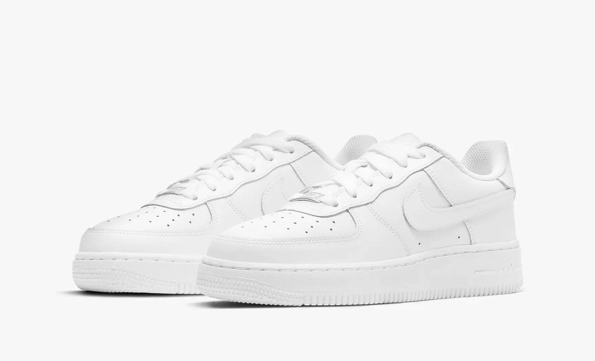

Самые популярные кроссовки для кастомов

|  | Вот как создаются легенды. Кроссовки Nike Air Force 1 LE — это повседневная версия легенды баскетбольной площадки 1982 года в полностью белой или полностью черной расцветках. Прочность, комфорт и технология Air по-прежнему доступны для тех, кто любит классику. |